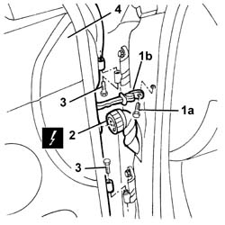

7210E36 R.R. FRONT SIDE DOOR
- Path
- Procedures > 72 PANELS AND FRAME > 7210 REMOVING REFITTING > 7210E EXTERNAL PARTS > 7210E36 R.R. FRONT SIDE DOOR
- Kind
- repair procedure (removal / refitting; the operation number is the code)
- Applies to
- all engines; all production periods
- Interactive page
- https://sloeber94.github.io/elrnDB-aGt/en/#/125002030
Applies to: all engines; all production periods
 Removing
Removing
 Refitting
Refitting1. Undo the bolt (1a) which secures the door check strap (1b) to the door pillar and close the door to push the check strap back in.
2. Disconnect the electrical connection.
Name | Connector | |
|---|---|---|
2 | Rear coupling for front door driver's side | See D30 REAR COUPLING FOR /FRONT DOOR. DRIVER'S SIDE |
Name | Connector | |
|---|---|---|
2 | Front passenger door rear coupling | See D31 RIGHT FRONT DOOR REAR COUPLING/. |
3. Undo the hinge bolts.
4. Lift the doodr and remove it.

Applies to: all engines; all production periods
Refitting
RemovingRefit the door on the hinges.
Tighten the hinge bolts.
Connect the electrical connection.
Check the various appliances on the door are working properly.
Make the check strap come out and tighten the bolt.
Check the door alignment and, if necessary,